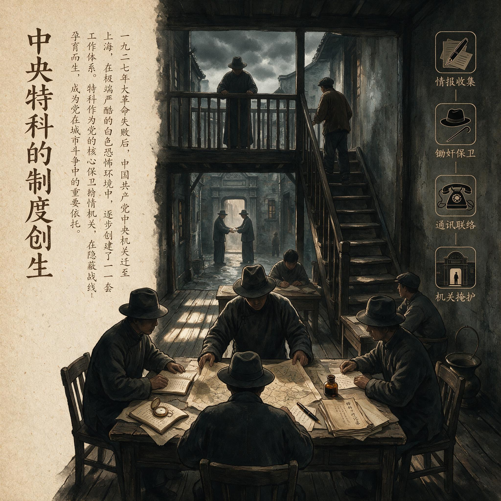

第 2 章
中央特科的制度创生
一个秘密组织最危险的时刻，往往不是它联系不上成员，而是它让一个成员知道得太多。1927年11月，一个化名“老周”的中央交通员已经连续第四周坐在上海法租界霞飞路一家茶馆的二楼，等那个

中央特科的制度创生：历史出版插图
AI 生成插图，非史实影像。
本该在每周三下午三点出现的接头人。茶水换了三遍，楼梯口始终没有他认识的面孔。
他负责传递中央与江苏省委之间的文件，却不知道省委是否还存在，不知道接头人是被捕、叛变，还是单纯无法脱身，也不知道自己该不该放弃这个联络点。继续等，可能是自投罗网；放弃，则可能切断一条极难重建的通道。他最终能做的，只是继续等。
这个亭子间里的僵局，也正是清党后整个中共地下状态的缩影。但其中藏着一个容易被忽略的事实：老周不知道的东西，敌人也撬不出来。他不知道省委的完整组织，不知道其他交通线，不知道文件最终落到谁手里。他的“无知”在那一瞬间不是缺陷，而是一种保护。
后来特科的全部制度骨架，几乎都可以看作这种偶然经验的有意放大——用组织分工制造有控制的不知情，用信息隔离替代对个人忠诚的无条件依赖。
1927年4月以后，中共面对的局面远比“损失惨重”四个字复杂。国民党清党运动使党组织在数周内被逐出公开空间，省、市、区、支部之间的链条成片断裂。上海不知道武汉的情况，广东的幸存者不知道湖南是否还有人活着。更致命的是，此前大量党员以公开身份活动，住在公开地址，进入国民党的党部、工会、农会和军队政治部。清党者不需要费心侦察，只需按名册和地址上门抓人。一个没有独立秘密工作体系的政党，发现自己不仅失去了合法地位，连最基本的联络和藏身手段都尚未建立。
1927年5月中共五大在武汉召开时，中央已经意识到必须建立专门的保卫机构。但从工人纠察队和黄埔军校学生中临时抽调的人手，既没有专业分工，也没有成文规则。
八七会议之后，中央机关转入地下，最初的应对依然是分散而临时的：领导人化名租房，交通员凭暗号接头，文件藏进米袋或衣箱夹层。这些做法保护了少数核心干部，却无法阻止破坏链的延长——一个人被捕，常常牵出同一条线上的所有人，因为旧式联络中的交通员、收信人、转手人彼此相熟，共享着整条线的信息。
1927年11月，周恩来从广东回到上海。他在黄埔军校和上海工人第三次武装起义中积累的组织经验，让他比多数人更早意识到：秘密工作不是把公开工作搬进暗处，而是要建立一套与公开政治组织完全不同的规则。回到上海后，他做的第一件事是逐条线排查，派人按旧联络方式接头，观察动静，测试联络点是否仍然安全。这个过程持续数月，其间不断有人被捕，也不断有联络点被证实已经暴露。
摸底结果令人沮丧，但有一个规律逐渐浮现：那些存活下来的联络线和隐蔽点，大多与组织其他部分联系较少。换言之，相对孤立、知道得少的节点，存活率更高。这个观察后来成为特科制度的起点。
它不是从情报理论中推演出来的，而是从大量被捕与幸存的差异中反推出来的：在高度危险的环境里，信息集中意味着风险集中；减少一个人掌握的信息，就是减少他被捕后可能造成的破坏。
1927年秋至1930年前后，周恩来主持把保卫、交通、情报、行动等分散资源整合进一个机构，内部称“特科”。这个整合不是一次性的制度创设，而是在持续压力下不断调整的结果。特科最终形成总务、情报、行动、无线电通讯等不同序列，但它的制度意义不在人数规模，也不在各科名称的整齐。直到1931年顾顺章叛变前，特科核心人员不过数十人。
真正重要的是工作领域隔离：情报人员不参与武装行动，交通线不掌握完整机关名单，行动人员未必认识情报来源。负责租房子的人不知道房子住谁，负责送信的人不知道信的内容，负责监视的人不知道情报去向。这种隔离的设计目标很明确：截断破坏链。一个交通员被捕，最多损失一条线；一个机关被破获，最多损失机关内的人员和文件；一个情报员暴露，不会连带出行动人员。
每一条线相对独立，每个人只知道执行任务所需的最低限度信息。敌人可以破坏一个节点，却无法顺着这一节点爬向整个网络。
但隔离也制造了一个新问题：谁来掌握全局？特科早期的答案是少数核心负责人。周恩来事实上掌握着各条线的人员名单、联络方式和任务分配。各科负责人向他报告，由他决定哪些信息需要共享、哪些行动需要协调。这一安排在初创阶段几乎不可避免——各条线彼此隔离，必须有人在其间协调；而信任需要时间建立，只能依赖少数经过考验的干部。
于是，正式的制度分工仍然被嵌入一张高度个人化的关系网络之中。周恩来与早期核心成员的关系，几乎全部建立在私人信任而非程序考核上。总务负责人洪扬生是黄埔学生，情报负责人陈赓是黄埔一期生，行动负责人顾顺章是上海工运中的直接合作者，无线电负责人李强由周恩来亲自安排学习技术。这种模式在当时有充分理由：秘密工作要求高度可靠，而可靠性在缺乏制度检验时只能靠个人了解来判断。
周恩来认识这些人，了解他们的能力与关键时刻的表现，这些是档案考核无法替代的。但个人信任的弱点同样清楚——它无法约束背叛。当一个人掌握大量信息，而对他的制约主要来自私人忠诚时，一旦背叛，所有信息立即变成敌方资产。
1928年至1930年间，特科在渗透方面取得了迄今最显著的成绩。钱壮飞、李克农、胡底三人先后潜入国民党中央组织部调查科，钱壮飞担任调查科主任徐恩曾的机要秘书，得以接触国民党情报系统核心文件。1930年，受钱壮飞委托，李克农在南京丹凤街开设“民智通讯社”，明为国民党服务，暗里作为共产党的联络据点。这一渗透深度在当时的严酷条件下堪称罕见。国民党内部对中共机关的搜捕计划、对被捕人员的审讯情况，能够被及时传递到中共中央手中。
然而，“龙潭三杰”的成功恰恰暴露了制度的脆弱处。三人的渗透不是通过制度化路径实现的，而是借助同乡、引介和私人交情。钱壮飞与徐恩曾之间的同乡关系，李克农经钱壮飞引介，胡底同样如此。
这意味着渗透线的存续高度依赖个人关系和关键人物的安全。更关键的是，钱壮飞能够获取核心情报，正因为他个人掌握了太多信息。他是机要秘书，几乎什么都能看到。他在敌方系统中的嵌入深度，与他在己方系统中的信息集中度是同一枚硬币的两面。如果钱壮飞叛变，他对中共造成的破坏不会小于他对国民党造成的破坏。这不是假设。
1931年4月，中共中央政治局候补委员顾顺章在武汉被捕后投降国民党。他是特科行动负责人，掌握上海大量机关地址、交通线和人员名单，熟悉中央领导人的化名与伪装身份。他几乎立即提出面见蒋介石，准备把掌握的一切全盘交出。如果他的计划得逞，由他带路在上海指认中共中央机关，清党式的摧毁将在更精确的层面重演。中共中央机关能够安全转移，依靠的是钱壮飞截获了武汉发给徐恩曾的密电。他派其女婿将消息通知李克农，李克农再转报中共中央。这个传递链条本身高度依赖个人关系，也证明了渗透的价值。
但它的偶然性同样突出：一个机构的存亡，竟系于一个人是否叛变，以及另一个人是否恰好在他叛变后数小时内截获电报。制度化安全机制的缺失，在这一刻暴露得比任何时候都清楚。
顾顺章叛变后，特科进行大规模应急调整。凡顾顺章知道的机关地址全部放弃，凡他熟悉的联络方式全部更换，凡可能被他指认的人员全部转移。中央机关的核心部分保住了，但代价是多年经营的上海地下网络几乎推倒重来，许多渗透关系和情报来源被迫中断。也正是在这一事件之后，单线联系才从一种灵活做法变成严格制度：每个地下工作者只知自己的上线和下线，不知其他支线。即使一人叛变，他能供出的也只是自己这条线上的两个人，而非整张网络。
这一转变标志着一个重要的组织逻辑转换：前提假设从“同志是可靠的”变成“任何人都可能叛变”。安全机制不再依赖个人忠诚，而是围绕信息限制与权限分级重新构建。信任仍然重要，但它不再被当作安全的保障。真正能够约束损失的是制度规则——让叛变者没有足够的信息可卖。
但这一转换发生在1931年之后。回到特科初创期，制度设计仍在根本张力中摇摆。一方面，工作领域隔离要求分散信息，限制知情范围；另一方面，有效协调又要求有人掌握全局。这个张力在当时没有被制度解决，而是被个人化了。周恩来等少数核心负责人承担了信息集中者的角色，制度本身没有提供防护机制来应对这些集中者可能带来的风险。
特科同时承担叛徒惩处与敌方渗透两项功能，暴力和情报同属一个机构，这一事实本身就说明早期地下工作的首要目标是保护中央机关安全，而非系统获取战略情报。行动是为了清除内部威胁，情报是为了提前规避外部打击，两者服务于同一目标：在白色恐怖中活下来。
有人把早期地下组织的韧性归功于意识形态狂热或个人英雄主义。这不完全错。特科的运转确实依赖少数人的坚定信念与超常能力，周恩来、陈赓、钱壮飞的名字本身就构成一种解释。但顾顺章案恰好证明，狂热无法阻止背叛，才华无法替代权限分级。
真正让组织从单点崩溃中活下来的，不是某个英雄，而是事件之后被迫形成的隔离规则。英雄提供了短期的安全，制度才提供长期的韧性。
那个1927年冬天坐在霞飞路茶馆里的交通员老周，最终没有等到接头人。第四周后他放弃了联络点，通过另一条迂回渠道重新与组织接上。江苏省委确实遭到破坏，接头人已经被捕。但被捕者没有招供出这个联络点，不是因为他特别坚强，而是因为他确实不知道更多。老周与接头人之间当时还不是严格意义的单线联系，但那个接头人恰好只认识老周这一个上级交通员，即便开口，也供不出更大的网络。
这个偶然的幸存案例，包含了一个后来被制度化的洞见：信息限制不是信任缺失的表现，而是对不可控风险的理性防范。一个人不知道的信息，敌人就不可能从他嘴里撬出来。这个逻辑在1927年冬天还只是模糊的生存直觉，后来逐渐凝结为工作领域隔离、有限知情权、单线联系等制度原则。
1927年秋天，中共中央机关报《布尔塞维克》在上海秘密创刊。编辑部设在法租界一处石库门房子的亭子间里，印刷用的纸张和油墨通过三条互不交叉的渠道运进来：一条负责采购，一条负责运输，一条负责分发。采购的人不知道纸张最终印什么，运输的人不知道纸张从哪里买的，分发的人不知道印刷地点。这三条线上的交通员彼此不认识，由不同的人单线联系。
这不是刻意设计的制度实验，而是被逼出来的。此前几个月，中央在武汉的印刷所因为采购纸张时暴露了地址——书店老板被捕后供出了常来买纸的年轻人，年轻人供出了印刷所的位置，印刷所里的人供出了编辑部的地址。一条线上四个人，全部被捕。到上海后，负责后勤的同志开始有意识地把采购、运输和使用拆开。他们未必能清晰说出“工作领域隔离”这个词，但他们知道：让一个人知道得少一点，整条线就安全一点。
这种从血里学来的经验，在1927年秋冬之际迅速扩散到地下工作的各个环节。
负责租房设立机关的人，不再被告知机关的具体用途。他们只负责找房子、签租约、交房租，至于房子里住谁、做什么，与他们无关。
一个专门负责找铺保的同志，手里掌握着几十个可以用来担保的身份和店铺，但他不知道这些铺保最终保的是哪些机关。他只对总务科负责人洪扬生报告，洪扬生再根据各条线的需求分配铺保资源。同样，负责送信的交通员不知道信的内容，负责接头的人不知道对方的真实姓名和住址，负责保管文件的人不知道文件从哪里来、要送到哪里去。每个人被嵌入一个信息受限的位置，只掌握执行任务所需的最低限度信息。
这套做法在特科正式成立之前就已经开始零散运行。周恩来回上海后做的第二件事——第一件是逐线排查——就是把这些分散的做法系统化。
他要求每条线画出自己的联络图，标注每个节点知道什么、不知道什么。然后他逐条审查：如果这个节点被捕，他能供出什么？如果供出，能牵出多少人？
审查的结果令人后怕。许多线路的节点知道得太多：一个交通员可能同时知道发信人、收信人、中转人和备用联络点，一旦被捕开口，整条线甚至相邻线路都可能被连根拔起。
周恩来下令重新切割信息边界：交通员只能知道自己的上线和下线，中转站只能知道前后两个中转站，机关驻地只能知道本机关的人员和相邻一个联络点。切割之后，每条线的信息不再集中在任何一个节点上，而是分散在多个节点之间。要拼出完整线路，必须同时控制多个节点——这在当时的搜捕条件下几乎不可能。
但切割信息边界只是第一步。真正困难的是在切割之后仍然保证线路运转。一个交通员只知道自己的上线和下线，意味着他无法在上下线同时失联时主动寻找替代路径。一个机关只知道相邻一个联络点，意味着一旦那个联络点暴露，机关就与组织失去联系。
信息切割降低了破坏的连带面，也降低了线路的冗余度和自我修复能力。解决这个矛盾的办法是增加线路密度：不依赖单一路径，而是铺设多条平行线路，每条线路独立运转，互不知情。中央与江苏省委之间最多时有四条独立的交通线，由不同的交通员跑，走不同的路线，用不同的暗号。四条线的交通员彼此不认识，不知道还有其他线存在。一条线断了，其他线照常运转。省委收到同一份文件的多份副本时，才知道中央铺设了多条线。
这种做法成本极高——维持一条交通线需要人力、经费、掩护身份和安全的交接点，四条线意味着四倍的成本——但在当时，成本是可以接受的代价，因为断线的代价更高。
1928年初，特科开始在上海建立一套机关分布体系。这个体系的核心原则是功能分离：开会的地方不住人，住人的地方不存文件，存文件的地方不接头，接头的地方不开会。中央政治局开会的机关设在公共租界一处商号楼上，平时无人居住，只在开会前几小时由总务科派人布置，会后立即清理恢复原状。与会者分批到达，走不同的路线，在不同时间进门。
他们只知道开会的大致区域，不知道具体地址，由交通员带到附近再指路。文件在另一个机关起草和印刷，通过交通线送到开会地点，会后立即销毁。中央领导人的住处与开会机关严格分离，住处地址只有极少数人知道。周恩来自己的住处多次变换，有时一个月搬两次家，每次搬家只通知直接联系人，旧地址立即废弃。
这套体系运转起来像一个精密但脆弱的机器。精密在于每个零件各司其职，互不干扰；脆弱在于一旦某个关键零件失效——比如负责协调各线的人被捕——整个机器可能停摆。
而这个关键零件，就是特科的核心负责人。1928年至1930年间，周恩来实际掌握着上海地下网络的完整图景：哪些机关在哪些地址，哪些交通线连接哪些节点，哪些渗透关系嵌在敌方机构内部，哪些备用线路可以在紧急情况下启动。这些信息分散在各条线的负责人手中，但汇总到周恩来这里。他需要这些信息来做决策：当一条线暴露时，应该切断哪些相邻节点？
当需要协调情报与行动时，应该让谁知道什么？当经费紧张时，应该优先保障哪条线？信息集中是协调的前提，没有全局视野就无法做出有效调度。
但信息集中本身制造了一个单点故障源：如果掌握全局的人出了问题，整个系统都会暴露。
这不是理论推演出来的风险。1928年4月，中共中央政治局常委罗亦农在上海被捕。罗亦农当时知道大量机关地址和联络方式，他的被捕直接威胁到中央机关的安全。特科迅速启动应急程序：所有罗亦农知道的机关立即转移，所有他熟悉的联络方式立即更换。
转移在几小时内完成，国民党军警赶到时扑了空。但这次事件暴露了一个问题：罗亦农之所以知道那么多，不是因为制度需要他知道，而是因为他是政治局常委，日常工作中不可避免地接触到各条线的信息。制度没有为他设置信息边界，因为高层决策者被认为天然可靠。罗亦农没有叛变——他在被捕后六天即被杀害——但他的被捕本身就构成威胁：敌人可以通过审讯撬出信息，不需要他主动合作。
罗亦农案之后，周恩来开始在高层次推行有限知情权原则。政治局委员不再自动获知所有机关地址和联络方式，只被告知与自身工作直接相关的信息。需要跨线协调时，由特科提供具体信息而非全局图景。
这一调整减少了高层信息集中度，但无法根本解决问题：周恩来本人仍然是信息集中者，特科各科负责人仍然掌握着本科的完整信息。制度可以限制中层和基层的知情范围，却无法限制核心层的知情范围，因为核心层的知情是制度运转的前提。
这个矛盾在特科初创期无法解决，只能靠核心层的高度自律来缓解：周恩来频繁变换住处和化名，减少被跟踪和识别的风险；各科负责人之间不互相打听工作细节，即使知道也不记录；关键信息尽量记在脑子里而非纸上。
1929年8月，中央军委秘书白鑫叛变，出卖了彭湃、杨殷等四位军委委员。四人被捕后遭杀害，这是中共早期地下工作中损失最惨重的一次叛卖事件。
白鑫的叛变之所以造成如此大的破坏，原因正在于他作为军委秘书掌握了太多信息：他知道军委委员的住处、开会地点和接头方式，知道中央与军委之间的交通线，知道部分特科人员的身份。他一个人供出的信息，足以让国民党军警在几天内连续抓捕多名高级干部。
特科随后对白鑫实施了惩处，但惩处只能消除叛徒本人，无法消除制度缺陷。白鑫案再次证明：当一个人掌握的信息超过必要限度时，他的叛变不是个人背叛的问题，而是制度设计的问题。
制度把太多信息集中在他身上，却没有设置任何机制来限制他使用这些信息的能力。
白鑫案后，特科加速推进信息切割，但切割的对象主要是中下层工作人员。高层的信息集中问题不仅没有解决，反而因为渗透工作的成功而加剧。
1930年钱壮飞潜入国民党中央组织部调查科后，他个人掌握的信息量急剧膨胀：他知道国民党对中共机关的搜捕计划，知道被捕人员的审讯情况，知道国民党安插在中共内部的内线身份；同时他也知道中共方面的大量信息——中央机关的地址、领导人的化名、交通线的布局、特科的行动计划。
他是双向的信息集中者：在国民党系统中，他掌握着情报核心；在中共系统中，他掌握着渗透线的命脉。他的安全就是渗透线的安全，他的暴露就是渗透线的暴露。
这种高度依赖个人的渗透模式，在短期内创造了惊人的情报效益，却在结构上埋下了致命的脆弱性。
1931年4月顾顺章叛变时，所有这些脆弱性同时引爆。顾顺章作为特科行动负责人，掌握的信息量甚至超过钱壮飞：他知道上海几十处机关的具体地址，知道各条交通线的接头方式和暗号，知道中央领导人的化名、伪装身份和日常活动规律，知道特科惩处叛徒的行动方式和人员配置。他脑子里装着的是一张完整的上海地下网络地图。当他决定合作时，这张地图就变成了敌方的资产。
更致命的是，顾顺章知道钱壮飞的身份——他知道国民党调查科内部有中共的渗透人员。如果他供出这一信息，不仅钱壮飞本人危险，整个渗透线都会崩溃，中共将失去最重要的情报来源。顾顺章确实准备供出这一点，他要求面见蒋介石时当面陈述，因为他知道这一信息的价值足以换取更高的价码。
他的这个要求意外地为中共争取了时间：武汉方面必须先请示南京，请示电报被钱壮飞截获。
钱壮飞截获电报后派其女婿通知李克农，李克农再转报中共中央。这个传递链条的每一个环节都高度依赖个人关系：钱壮飞的女婿不是组织安排的联系人，而是因为亲属关系恰好可用；李克农与钱壮飞之间的信任建立在同乡和长期合作基础上，没有制度化的替代路径；李克农找到中央的方式是通过陈赓，陈赓恰好在那天能够被找到。如果任何一个环节断裂——如果钱壮飞的女婿不在家，如果李克农那天不在联络点，如果陈赓外出未归——消息就无法及时送达，中央机关可能来不及转移。整个应急过程充满了偶然性，任何一个偶然因素的缺失都可能导致灾难性后果。
中央机关最终在顾顺章带路指认之前完成了转移。转移的规模之大、速度之快，在上海地下工作史上前所未有。凡顾顺章知道的机关地址全部放弃，凡他熟悉的联络方式全部更换，凡可能被他指认的人员全部转移。周恩来、王明、博古等中央领导人连夜搬离原住处，分散到临时准备的隐蔽点。
1927年11月那个深夜，周恩来在上海一间屋子里写下过一份名单，上面标注着代号和联络方式，每个人名后对应着不同的分工：租房找铺保的，盯梢反盯梢的，建立秘密电台的，惩处叛徒的。
这些符号代表的是一种新的组织逻辑：从躲藏变成隐蔽，从被动应变变成主动布局，从依赖个人变成依赖制度。那份名单后来销毁了——秘密工作不允许留下文字证据。但它的逻辑留了下来，并在随后的岁月里不断扩展和硬化。名单上标注的每一个工作领域，后来都发展成庞大的专业系统；
名单上不曾标注的东西，则成为最危险的真空。掌握全局信息的核心负责人，本身成了整个体系中最不安全的节点。工作领域隔离切断了底层之间的横向联系，却把所有纵向信息汇集到少数核心身上。
这些节点一旦被击穿，隔离机制不仅无法阻止破坏蔓延，反而因为信息高度集中而使破坏更致命。顾顺章的叛变不是偶然事故，而是特科初创期制度设计中固有矛盾的集中爆发。
在清党的废墟上，设计者优先考虑的是让各条线重新运转起来，而非防范核心负责人叛变。后者在当时看来几乎不可想象。但当顾顺章在武汉被捕后迅速决定合作时，“不可想象”变成了现实。特科集中掌握的信息，在这一刻成为最危险的资源——一个人脑子里装着的东西，足以让整个中央机关灰飞烟灭。这个后果没有在1927年冬天显现，但它的条件已经随着那份名单写进了组织的骨架里。